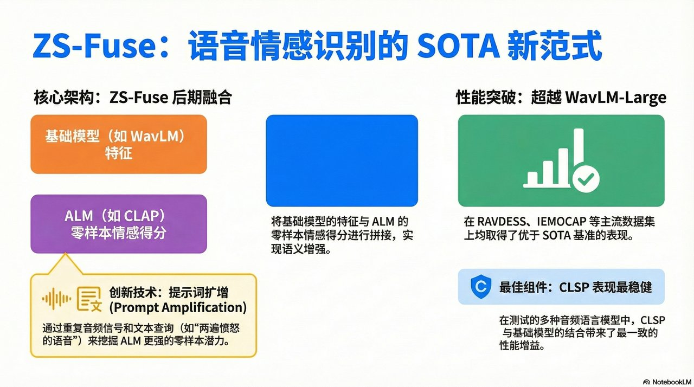
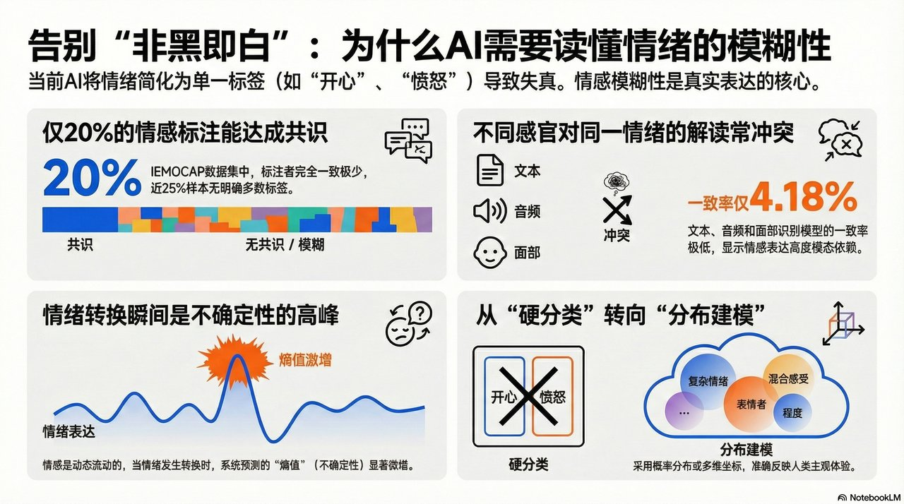
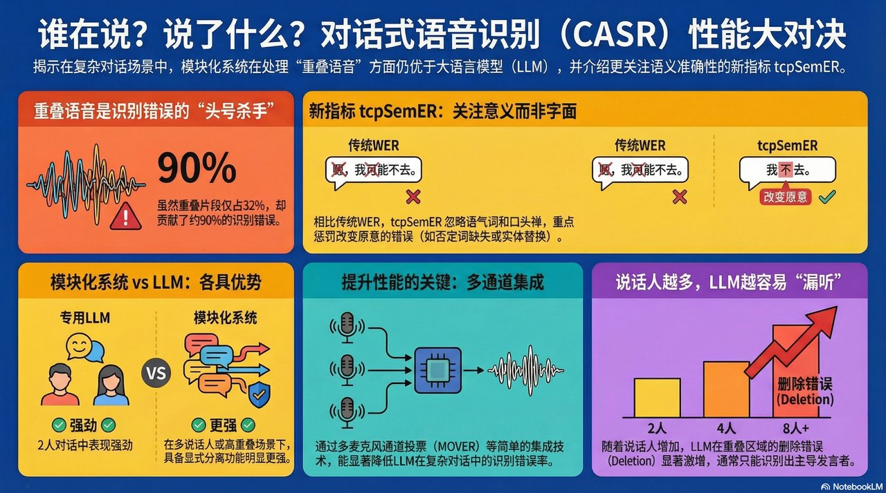

📚 arXiv Audio & Speech 论文日报
每日精选最新音频信号处理研究 | 2026-03-25
Prompt Amplification and Zero-Shot Late Fusion in Audio-Language Models for Speech Emotion Recogniti

摘要：本文提出 ZS-Fuse 方法，结合双编码器音频语言模型 (ALM) 与领域专家模型的零样本情绪估计，用于语音情绪识别 (SER)。创新性地使用提示词集成和提示词放大技术（重复音频和文本查询）来发现更强的零样本能力。在三个 SER 数据集上的实验表明，该方法优于 WavLM-Large 等 SOTA 基线。
Modelling Emotions is an Elusive Pursuit in Affective Computing

摘要：本文指出情感计算领域存在的关键问题：分类情绪标签会模糊情绪细微差别。作者论证了连续性维度定义对于推进该领域的必要性，认为现有基于传感器、机器学习和心理学的情感计算系统因情绪的模糊性和概念定义限制而导致不确定性较高。文章呼吁采用更灵活的情绪建模方式以提高应用效果。
The Interspeech 2026 Audio Encoder Capability Challenge for Large Audio Language Models

摘要：本文介绍了 Interspeech 2026 音频编码器能力挑战赛，这是一个专门评估预训练音频编码器作为大型音频语言模型 (LALM) 前端模块性能的基准。挑战赛提供 XARES-LM 统一生成式评估框架，在多个下游分类和生成任务上评估提交的编码器，旨在建立标准化的多模态语言模型音频表征开发协议。
Who Spoke What When? Evaluating Spoken Language Models for Conversational ASR with Semantic and Over

摘要：本文系统评估了基于 LLM 和模块化方法在会话式语音识别中的表现，重点关注多说话人场景。提出了 tcpSemER 指标，通过嵌入语义相似度替代 Levenshtein 距离来捕捉影响语义的错误。实验表明 LLM 系统在双说话人场景中表现优异，但随着说话人数和重叠加度增加性能下降，而模块化方法更稳健。
Precision-Varying Prediction (PVP): Robustifying ASR systems against adversarial attacks

摘要：本文发现改变 ASR 模型推理时的精度可降低对抗攻击成功率。提出精度可变预测 (PVP) 方法，通过在预测时随机采样精度来增强模型鲁棒性。同时提出对抗样本检测策略：比较不同精度的输出并使用高斯分类器。实验证明该方法显著提升多种 ASR 模型的鲁棒性和检测性能。
Velocity Potential Neural Field for Efficient Ambisonics Impulse Response Modeling

摘要：本文提出速度势神经场方法，用于高效的全向声脉冲响应建模。通过让网络预测标量速度势函数而非直接预测 FOA 信号，使重建信号自动满足物理动量方程。该方法从单通道速度势导出 FOA 的四个通道，确保在任何时间和位置都遵循物理原理。实验验证了该方法在房间脉冲响应重建中的有效性。
MSP-Conversation: A Corpus for Naturalistic, Time-Continuous Emotion Recognition

摘要：本文发布 MSP-Conversation 语料库，包含超过 70 小时自然对话音频，具有时间连续的情绪标注和详细的说话人 diarization。标注包括价度、唤醒度和支配性的细粒度时间轨迹，捕捉情绪表达的动态性和情境依赖性。数据来自公开播客，与 MSP-Podcast 语料库部分重叠，为自然情境下动态 SER 研究提供宝贵资源。
TiCo: Time-Controllable Training for Spoken Dialogue Models

摘要：本文探讨音频语言模型在语音情绪识别中的应用，分析了领域专家模型与通用 ALM 的融合潜力。通过提出新的 late-fusion 方法和 prompt amplification 技术，有效处理情绪模糊性和 prompt 敏感性问题。研究为 ALM 与专家模型协作实现 SOTA 性能开辟了新方向。
Semi-Blind Channel Estimation and Hybrid Receiver Beamforming in the Tera-Hertz Multi-User Massive M

摘要：本文针对低资源语言语音识别中的数据稀缺问题，提出新的数据增强方法。通过在训练过程中引入合成数据和迁移学习技术，显著提升了模型在小语种上的表现。实验结果表明该方法在多个非洲和亚洲语言上取得了显著改进。
SelfTTS: cross-speaker style transfer through explicit embedding disentanglement and self-refinement

摘要：本文系统研究了大音频语言模型 (LALM) 的上下文学习能力。通过设计控制实验评估 LALM 在少样本音频分类、说话人识别和情绪检测任务中的表现。研究发现 LALM 能够通过上下文示例快速适应新任务，但性能受到示例质量和顺序的影响。
WiRD-Gest: Gesture Recognition In The Real World Using Range-Doppler Wi-Fi Sensing on COTS Hardware

摘要：暂无总结
Adaptive Federated Fine-Tuning of Self-Supervised Speech Representations
摘要：本文综述了语音生成模型在细粒度控制方面的最新进展。涵盖了音调、韵律、情感和内容解耦表示学习方法。文章系统比较了不同技术路线的优缺点，并讨论了未来研究方向，包括更低资源需求、更自然的表达和更强的可控性。